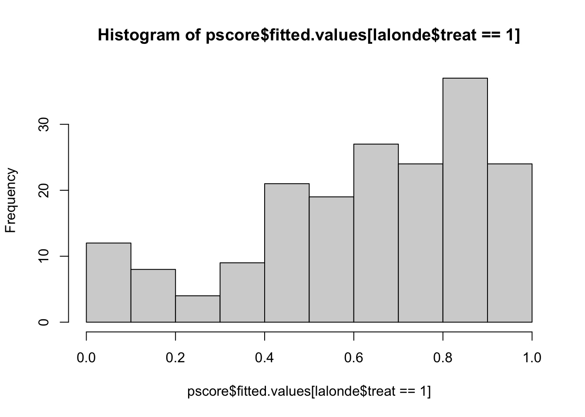

Chapter 6 Propensity Score Analysis
In this lab, we will use propensity scores to perform other types of analyses (weighting, stratification, and covariate adjustment)
library(weights)
library(survey)
library(twang)
library(CBPS)
library(cobalt)
library(jtools)
library(lmtest)
library(sandwich) #vcovCL
library(rbounds) #gamma
library(tidyr)
library(tidyverse)
library(janitor)6.1 Data
#data(lalonde)
lalonde = MatchIt::lalonde
dim(lalonde)## [1] 614 9names(lalonde)## [1] "treat" "age" "educ" "race" "married" "nodegree" "re74" "re75"
## [9] "re78"6.2 Calculating Propensity Scores
6.2.1 Different formulas
fm1 = treat ~ age + educ + black + hispan + married + I(re74/1000) + I(re75/1000)
fm2 = treat ~ age + I(age^2) + I(age^3) + educ + black + hispan + married + I(re74/1000) + I(re75/1000)
fm3 = treat ~ age + I(age^2) + I(age^3) + educ + I(educ^2) + black + hispan + married + I(re74/1000) + I(re75/1000)6.2.2 Calculation of propensity scores (p-scores)
pscore <- glm(fm2, data = lalonde, family = 'binomial')
head(pscore$fitted.values)## NSW1 NSW2 NSW3 NSW4 NSW5 NSW6
## 0.5871794 0.3014102 0.9056376 0.9020139 0.9069395 0.8230760hist(pscore$fitted.values[lalonde$treat==0],xlim=c(0,1))
hist(pscore$fitted.values[lalonde$treat==1],xlim=c(0,1))
lalonde$pscore = pscore$fitted.values6.3 IPTW: Inverse Probability Treatment Weighting
In the following code, the weight variable weightATE is created by using the ifelse() function to obtain the inverse of the propensity score for treated units or the inverse of 1 minus the propensity score for control units
lalonde$weightATE <- with(lalonde, ifelse(treat==1, 1/pscore, 1/(1-pscore)))A summary of the ATE weights for treated and untreated groups is obtained with the following:
with(lalonde, by(weightATE,treat,summary)) ## treat: 0
## Min. 1st Qu. Median Mean 3rd Qu. Max.
## 1.000 1.026 1.067 1.441 1.233 10.579
## ------------------------------------------------------------------------
## treat: 1
## Min. 1st Qu. Median Mean 3rd Qu. Max.
## 1.076 1.155 1.510 2.907 2.123 33.961boxplot(lalonde$weightATE ~ lalonde$treat)the maximum weight for the ATE is 117.417
Individuals with extreme weights for the ATE are those who are either very likely to participate in the treatment given their covariate values but did not or very unlikely to participate but did so.
perform weight truncation
Truncation can be performed by assigning the weight at a cutoff percentile to observations with weights above the cutoff.
The following code demonstrates weight truncation. More specifically, it uses the quantile function to calculate the weight at the 99th percentile and the ifelse function to assign this weight to any student whose weight exceeds the 99th percentile:
lalonde$weightATETruncated <- with(lalonde, ifelse(weightATE > quantile(weightATE, 0.99), quantile(weightATE, 0.99), weightATE))may truncate all above .05 quantiles if necessary
with(lalonde, by(weightATETruncated,treat,summary)) ## treat: 0
## Min. 1st Qu. Median Mean 3rd Qu. Max.
## 1.000 1.026 1.067 1.441 1.233 10.579
## ------------------------------------------------------------------------
## treat: 1
## Min. 1st Qu. Median Mean 3rd Qu. Max.
## 1.076 1.155 1.510 2.530 2.123 12.546boxplot(lalonde$weightATETruncated ~ lalonde$treat)
6.3.1 Balance check
In this section, covariate balance evaluation is performed by comparing the standardized difference between the weighted means of the treated and untreated groups.
The bal.stat function of the twang package (Ridgeway et al., 2013) is useful for covariate balance evaluation.
If there are no sampling weights, then sampw=1.
covariateNames <-names(lalonde)[3:14]
balanceTable <- bal.stat(lalonde, vars= covariateNames,
treat.var = "treat",
w.all = lalonde$weightATETruncated,
get.ks=F,
sampw = 1,
estimand="ATE", multinom=F)
balanceTable <- balanceTable$results
round(balanceTable,3) ## tx.mn tx.sd ct.mn ct.sd std.eff.sz stat p
## educ 10.460 2.012 10.258 3.002 0.077 0.654 0.513
## race:black 0.531 0.499 0.401 0.490 0.267 3.275 0.039
## race:hispan 0.163 0.370 0.117 0.322 0.144 NA NA
## race:white 0.305 0.461 0.482 0.500 -0.354 NA NA
## married 0.292 0.456 0.408 0.492 -0.236 -1.857 0.064
## nodegree 0.659 0.475 0.573 0.495 0.178 1.374 0.170
## re74 3258.732 6878.773 4513.602 6295.593 -0.194 -1.226 0.221
## re75 1997.046 3474.214 2137.977 3144.448 -0.043 -0.327 0.744
## re78 7169.346 7942.905 6349.181 6943.242 0.110 0.792 0.429
## black 0.531 0.500 0.401 0.491 0.267 1.957 0.051
## hispan 0.163 0.371 0.117 0.322 0.144 0.862 0.389
## un74 0.386 0.488 0.677 0.468 -0.594 -4.450 0.000
## un75 0.498 0.501 0.623 0.485 -0.255 -1.953 0.051
## pscore 0.390 0.308 0.306 0.316 0.268 1.938 0.053- std.eff.sz quantifies effect size
- 0.2 small 0.5 medium 0.8 large
- most of them are medium to large - balance was not achieved *
6.3.2 Estimation of treatment effect
the final weights are divided by the mean of weights to make them sum to the sample size, which is a process known as normalization.
lalonde$finalWeight <- lalonde$weightATETruncated/mean(lalonde$weightATETruncated)Before the estimation can be performed, the surveyDesign object is created with the svydesign function to declare the names of the variables that contain cluster ids, strata ids, weights, and the data set:
surveyDesign <- svydesign(ids=~1, weights=~finalWeight, data = lalonde, nest=T) Methods to obtain standard errors for propensity score weighted estimates include Taylor series linearization and resampling methods such as bootstrapping, jackknife, and balanced repeated replication (see review by Rodgers, 1999).
To use bootstrap methods with the survey package, the surveyDesign object created above should be modified to include weights for each replication. The following code takes the surveyDesign object and adds weights for 1,000 bootstrapped samples:
set.seed(8)
surveyDesignBoot <- as.svrepdesign(surveyDesign, type=c("bootstrap"), replicates=1000)First, the svyby function is used to apply the svymean function separately to treated and control units to obtain weighted outcome:
weightedMeans <- svyby(formula=~re78, by=~treat, design=surveyDesignBoot, FUN=svymean, covmat=TRUE)
weightedMeans## treat re78 se
## 0 0 6349.181 394.5367
## 1 1 7169.346 956.6697The code to obtain the treatment effect with a regression model is shown as follows. The model formula using R notation is re78~treat. This formula can be expanded to include any covariates and interaction effects of interest
outcomeModel <- svyglm(re78~treat,surveyDesignBoot)
summary(outcomeModel) # final model##
## Call:
## svyglm(formula = re78 ~ treat, surveyDesignBoot)
##
## Survey design:
## as.svrepdesign.default(surveyDesign, type = c("bootstrap"), replicates = 1000)
##
## Coefficients:
## Estimate Std. Error t value Pr(>|t|)
## (Intercept) 6349.2 394.5 16.09 <2e-16 ***
## treat 820.2 1025.7 0.80 0.424
## ---
## Signif. codes: 0 '***' 0.001 '**' 0.01 '*' 0.05 '.' 0.1 ' ' 1
##
## (Dispersion parameter for gaussian family taken to be 33407668806)
##
## Number of Fisher Scoring iterations: 26.4 Stratification
- The following code used the cut function to create five strata of approximately the same size based on the quintiles of the distribution of propensity scores for both treated and untreated groups.
- The quintiles are obtained with the quantile function. The function levels is used to assign number labels from 1 to 5 to the strata, and then xtabs is used to display strata by treatment counts.
hist(lalonde$pscore)quantile(lalonde$pscore, prob = seq(0, 1, 1/5))## 0% 20% 40% 60% 80% 100%
## 0.0004734592 0.0298866776 0.0730729257 0.2744818790 0.6466930310 0.9295361003lalonde$subclass <- cut(x=lalonde$pscore, breaks = quantile(lalonde$pscore, prob = seq(0, 1, 1/5)), include.lowest=T)
levels(lalonde$subclass) <- 1:length(levels(lalonde$subclass))
ntable <- xtabs(~treat+subclass,lalonde)
ntable## subclass
## treat 1 2 3 4 5
## 0 122 119 103 61 24
## 1 1 4 19 62 99surveyDesign <- svydesign(ids=~1, weights=~finalWeight, data = lalonde, nest=T) To use bootstrap methods with the survey package, the surveyDesign object created above should be modified to include weights for each replication. The following code takes the surveyDesign object and adds weights for 1,000 bootstrapped samples:
set.seed(8)
surveyDesignBoot <- as.svrepdesign(surveyDesign, type=c("bootstrap"), replicates=1000) The following R code uses svyby to apply the svymean function:
head(lalonde)## treat age educ race married nodegree re74 re75 re78 black hispan un74 un75
## NSW1 1 37 11 black 1 1 0 0 9930.0460 1 0 0 0
## NSW2 1 22 9 hispan 0 1 0 0 3595.8940 0 1 0 0
## NSW3 1 30 12 black 0 0 0 0 24909.4500 1 0 0 0
## NSW4 1 27 11 black 0 1 0 0 7506.1460 1 0 0 0
## NSW5 1 33 8 black 0 1 0 0 289.7899 1 0 0 0
## NSW6 1 22 9 black 0 1 0 0 4056.4940 1 0 0 0
## pscore weightATE weightATETruncated finalWeight subclass
## NSW1 0.5871794 1.703057 1.703057 0.9625366 4
## NSW2 0.3014102 3.317738 3.317738 1.8751250 4
## NSW3 0.9056376 1.104194 1.104194 0.6240705 5
## NSW4 0.9020139 1.108630 1.108630 0.6265776 5
## NSW5 0.9069395 1.102609 1.102609 0.6231747 5
## NSW6 0.8230760 1.214955 1.214955 0.6866701 5subclassMeans <- svyby(formula=~re78, by=~treat+subclass,
design=surveyDesignBoot, FUN=svymean, covmat=TRUE)## Warning in svrVar(repmeans, scale, rscales, mse = design$mse, coef = rval): 350 replicates gave
## NA results and were discarded.## Warning in svrVar(repmeans, scale, rscales, mse = design$mse, coef = rval): 21 replicates gave NA
## results and were discarded.## Warning in svrVar(replicates, design$scale, design$rscales, mse = design$mse, : 360 replicates
## gave NA results and were discarded.subclassMeans## treat subclass re78 se
## 0.1 0 1 8774.975 7.401116e+02
## 1.1 1 1 6788.463 4.072737e-14
## 0.2 0 2 7333.718 7.000384e+02
## 1.2 1 2 3330.084 1.245754e+03
## 0.3 0 3 6213.953 6.240724e+02
## 1.3 1 3 10249.964 2.443014e+03
## 0.4 0 4 4601.847 7.941464e+02
## 1.4 1 4 5616.417 6.939908e+02
## 0.5 0 5 4819.586 1.158452e+03
## 1.5 1 5 6501.883 8.881021e+02To obtain the ATE or ATT by pooling stratum-specific effects, svycontrast is used with the weights
First, use ntable to obtain the weights
ntable## subclass
## treat 1 2 3 4 5
## 0 122 119 103 61 24
## 1 1 4 19 62 99colSums(ntable)/sum(ntable)## 1 2 3 4 5
## 0.2003257 0.2003257 0.1986971 0.2003257 0.2003257ATTw = colSums(ntable)/sum(ntable)This won’t work:
pooledEffects <- svycontrast(subclassMeans, contrasts = list(ATT=ATTw)) - ATTw needs to be specified for EVERY group within EVERY stratum
- in our case, 9 groups (no treatment in first stratum so 2*5-1 = 9)
- Control groups get negative weights and treatment group gets positive weights:
ATTw2 <- c(-ATTw[1], ATTw[1], # first stratum, just control
-ATTw[2], ATTw[2], # second stratum
-ATTw[3], ATTw[3], # third stratum
-ATTw[4], ATTw[4], # fourth stratum
-ATTw[4], ATTw[5]) # fifth stratum
subclassMeans$ATTw2 <- ATTw2view ATTw2 here:
subclassMeans## treat subclass re78 se ATTw2
## 0.1 0 1 8774.975 7.401116e+02 -0.2003257
## 1.1 1 1 6788.463 4.072737e-14 0.2003257
## 0.2 0 2 7333.718 7.000384e+02 -0.2003257
## 1.2 1 2 3330.084 1.245754e+03 0.2003257
## 0.3 0 3 6213.953 6.240724e+02 -0.1986971
## 1.3 1 3 10249.964 2.443014e+03 0.1986971
## 0.4 0 4 4601.847 7.941464e+02 -0.2003257
## 1.4 1 4 5616.417 6.939908e+02 0.2003257
## 0.5 0 5 4819.586 1.158452e+03 -0.2003257
## 1.5 1 5 6501.883 8.881021e+02 0.2003257pooledEffects <- svycontrast(subclassMeans, list(ATT=as.numeric(ATTw2)))
pooledEffects## contrast SE
## ATT 142.22 557.76.5 Adjustment
adjustModel <- lm(re78~treat+pscore,lalonde)
summ(adjustModel) ## MODEL INFO:
## Observations: 614
## Dependent Variable: re78
## Type: OLS linear regression
##
## MODEL FIT:
## F(2,611) = 4.29, p = 0.01
## R² = 0.01
## Adj. R² = 0.01
##
## Standard errors: OLS
## ------------------------------------------------------
## Est. S.E. t val. p
## ----------------- ---------- --------- -------- ------
## (Intercept) 7569.64 416.59 18.17 0.00
## treat 1029.49 888.59 1.16 0.25
## pscore -3607.64 1304.77 -2.76 0.01
## ------------------------------------------------------